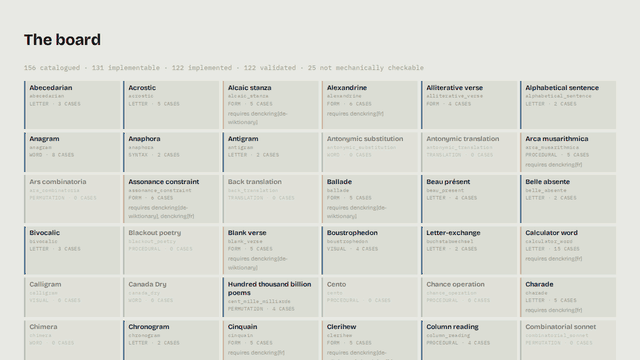

denckring¶

A library of experimental writing procedures — lipograms, snowballs, acrostics and a hundred and fifty more — where the validator is the eval.
Every procedure pairs a generator with a validator, and the acceptance criterion is intrinsic: a lipogram either contains the forbidden letter or it does not. Nothing has to be invented to test it, and nothing has to be believed. That is the whole design.

The board, nine machines on the stage, and gemma4 running on the same laptop calling
check_text and apply_procedure through this package's own MCP server. Nothing in it
is staged — the verdicts are the library's own.
Quickstart¶
pip install denckring
from denckring import check, produce
report = check("lipogram", "A small conforming bit of writing", forbidden="z")
report.satisfied, report.score # True, 1.0
produce("cut_up", "one two three four five six", seed=7).texts # the generating half
$ denckring check lipogram gedicht.txt --lang de # exits 1 when unsatisfied
$ denckring apply cut_up text.txt --json # emits a Production
$ denckring status
156 catalogued · 131 implementable · 122 implemented · 122 validated · 25 not mechanically checkable
0 instruments catalogued
Three interfaces over the same core functions, so they cannot disagree about what a
procedure is: the Python API, the CLI, and --json on check, apply, show and
describe for callers that are neither.
Letting a model write under a constraint¶
A model writing to a form can check its own draft instead of guessing, which is the difference between a haiku it believes is a haiku and one that is.
pip install denckring[mcp] # an MCP server: denckring-mcp
The server exposes four tools — list_procedures, describe_procedure, check_text,
apply_procedure — with the procedure as a parameter rather than eighty-six separate
tools, because model performance degrades with tool count. Errors come back as data
({"code": "invalid_params", ...}), never as a traceback a model cannot act on.
For Claude Code, the skill at
skills/denckring/SKILL.md
shells out to the CLI instead, and needs no extra beyond the package itself.
What's here¶
A hundred and twenty-two of the 156 catalogued procedures are implemented, and every one of them is validated. Of the rest, 25 have no mechanical acceptance criterion and are catalogued rather than implemented — see What can be checked — and the remaining 9 are sourced and awaiting implementation.
The gallery has a page per
catalogued procedure, generated from the catalogue and the golden fixtures, so every
worked example on it is one the test suite enforces and none of it can drift. Locally,
denckring list shows what your install can run and denckring list --status catalogued
shows everything.
Install options¶
The extras improve or unlock procedures rather than changing the language itself. Each vendored source keeps its own licence file beside the data it covers, which is why a distribution exists per licence rather than per language (ADR 0013).
| install | adds | what it unlocks |
|---|---|---|
denckring |
no data files | English, German and French; the lexicon-free procedures in all three |
denckring[en] |
pronouncing dictionary, noun lexicon, SCOWL graded word list | exact syllables instead of estimates; apply anagram |
denckring[de] |
word lexicon and noun list, from Wikidata Lexemes (CC0) | charade, semordnilap, word_square, n_plus_7, s_plus_7 in German |
denckring[de-wiktionary] |
pronunciations, stress, glosses (CC BY-SA) | every implemented row in German |
denckring[de-frequency] |
frequency bands, from the Leipzig Corpora Collection (CC BY) | German apply anagram |
denckring[fr] |
word list, nouns, frequency bands, glosses, syllables, phonemes (Lexique 3.82, fr.Wiktionary) | French from 70 rows to 103 |
denckring[mcp] |
the MCP server | denckring-mcp |
Without [en], syllables are estimated from spelling and every report says how many
words were guessed. apply anagram needs a word list graded by commonness, not one that
merely answers whether a string is a word (ADR 0028) — which is why it is the one thing
an unlocking extra is required for rather than merely improving. ADR 0030 records the
measurement behind [de-wiktionary]: 94.0% token coverage over 341,000 tokens of
Wieland, Goethe, Kafka and Mann.
Languages¶
German and French ship in core because the procedures that need no lexicon work for them unchanged; both are built-in defaults exactly like English (ADR 0022), and their data distributions override those defaults rather than registering through a separate path. On core alone, 70 of the 122 implemented rows run in French.
Language packs declare capabilities; procedures declare what they require. Asking for a
language whose pack is not installed, or a procedure whose requirements that pack does
not meet, raises MissingCapability naming what is missing rather than quietly returning
an approximate answer.
describe answers both halves of "can I run this in French": languages is the row's
authored editorial scope — wechselsatz is German by nature, not merely by capability —
and runs_in is computed from the installed packs. belle_absente is languages: [en]
and runs_in all three.
18 French rows will never close. They are accentual metres, French has no lexical
stress, and they are not French forms; declaring the capability to reach a bigger number
would be a promise the data cannot keep. ADR 0032 records why Wikidata Lexemes could not
supply French as it does German — 12,768 French noun lexemes against 188,948 German —
and ADR 0034 the line-level syllable seam French needs and the others do not: a final
mute e elides or counts depending on what follows, so French cannot be counted word by
word, and its line count is always estimated, never exact.
Whether ä counts as a is an editorial decision rather than a library constant, so it
is a parameter: fold_diacritics defaults to true and can be turned off per call. Glyph
questions never fold — Masse satisfies the prisoner's constraint and Maße does not,
because a written ß carries an ascender.
Reports and Productions¶
check returns a Report: satisfied, a continuous score in [0, 1], a list of
violations with character offsets, free-form metrics, and evidence — the
measurements the verdict rests on, each saying whether it came from a dictionary or a
spelling heuristic. A haiku that misses names the words it counted and what it made them;
a line that does not scan names the stress it read each word as. It is empty on the rows
that need no such account: a lipogram's violation already carries the offending character.
describe() says in advance which kind a row is — reading.determinacy is exact for 81
of the 122 and heuristic for 41. The score is monotone in
violation count and satisfied is exactly score == 1.0, so a caller driving a retry
loop can tell whether a text missed by one word or by fifty.
produce returns a Production — the procedure's id, its texts (best first, never
empty), truncated, and metrics — and apply is defined as produce(...).texts[0],
the one-text surface for a caller who wants the best answer and not the search behind it.
Both carry provenance: the package version, a schema version that moves independently
of it, which pack answered and which data distributions it was reading, the
fold_diacritics policy in force, and the seed a drawing generator used. German names
three distributions there, because GermanWiktionaryFrequencyPack layers three. The seed
is the field that makes a draw repeatable — it is an input parameter, so until it was
echoed here apply --seed 7 --json printed an object that did not contain 7.
texts is derived from candidates, which is where a generator that ranks says why:
produce("anagram", "dormitory") returns dirty room first, carrying the SCOWL size
band of its least common word, ahead of covers built from rarer ones (ADR 0027). A caller
reading texts gets the order without the reasons, which is a real cost of keeping that
field; the reasons are there for anyone who asks for candidates by name.
What can be checked¶
Not every procedure in the catalogue can be graded by a program, and the catalogue says
which. checkability: self means decidable from the text alone; source means it needs
the text it was made from, supplied as --source; none means no computable acceptance
criterion exists — canada_dry is defined as having no operative constraint, and a
calligram's shape is not something code judges. Those rows are catalogued because the
forms belong in an honest survey, and denckring status counts them separately rather
than reporting a gap that can never close.
What is stable¶
0.x means the API can change in a minor release, and the changelog says when it does.
Five surfaces are treated as contracts regardless, because things outside this repository
are built on them:
- Procedure ids. An id that has shipped does not change meaning. When a row is
replaced, the old id stays findable through
denckring searchas an alias — thoughgetresolves ids only, and raisesUnknownProcedurenaming the replacement.multiple_constraint, which replacedunivocalic_lipogram_pair, is the precedent. Reportas JSON —procedure,satisfied,score,violations,metrics,provenance— and the--jsonoutput ofcheck,showanddescribethat carries it. Fields may be added; the ones already there do not change type or meaning.describe'sDescriptioncarriesruns_inunder the same promise.provenancecarries its ownschema_version, which moves when the shape of these objects does and not when the package is released.Productionas JSON —procedure,candidates,texts,truncated,metrics,provenance— and the--jsonoutput ofapply. Covered by the same promise in the same words. Bothcandidatesandtextsare ordered, best first, becauseapplyreturnstexts[0].- The catalogue export schema (
denckring catalogue export), including thelicenceandattributionkeys the CC BY terms are carried by. - The
denckring.langentry-point group and the capability names a pack declares, so an installed third-party pack keeps working.
Not stable, and expected to move: violation rule strings, metrics keys, message
wording, and everything under denckring.core. A check's verdict is a contract; the
reason it gives for a failure is not one yet.
The catalogue as data¶
The catalogue is 156 sourced procedures and is a contribution in its own right — useful to someone who will never install the package.
denckring search rhopalic # finds snowball by its alias
denckring list --family form # the prosodic and stanzaic entries
denckring catalogue export --format json --output catalogue.json
Every entry records how its source was established, which is the field that makes the
dataset trustworthy: primary names an author, work and year the catalogue stands behind;
reference means the form is attested in a standard work — the Oulipo Compendium,
Borgmann's Language on Vacation, Word Ways — rather than traced to an origin;
traditional means no single origin exists to name. A reference row is not a weaker
primary; it is an honest statement that the origin is not established.
Entries are filed under one of eight families — letter, word, syntax, form,
permutation, procedural, translation, visual — and carry the other names each form
travels under, so a search for isogram finds heterogram.
Each entry also declares a layer. A verfahren is accepted the way everything in this
catalogue has always been accepted: run it, get text, have a checker score it. An
instrument is a combinatorial device — temurah, the zāʾirja — admitted for a mechanism
that is faithfully formalised and sourced, whether or not anyone would read its output.
Every row is a verfahren today, and denckring status counts the two on separate lines
so that the headline number keeps meaning what it has always meant (ADR 0033).
Devices, corpora and your own data¶
Three kinds of thing a procedure can need, handled differently. A device — Harsdörffer's five rings — is the procedure, so it ships with it. A language pack describes a language and ships separately when it carries weight, as above. A corpus is somebody's collection, so the package carries the loader and you supply the reading:
denckring check ideenwuerfeln throw.txt --source my-excerpts.json
A device's word-lists do not have to be the ones that shipped. Set DENCKRING_DEVICE_PATH
to a colon-separated list of directories and denckring.core.device.load searches them, in
order, before the packaged directory — so an earlier entry can add a device under a new id
or shadow a packaged one:
DENCKRING_DEVICE_PATH=/path/to/my/devices denckring check denckring wort.txt --param device=my_rings
Each directory holds one YAML file per device, named <id>.yaml, in the shape the packaged
devices use (see src/denckring/data/devices/). A directory that does not exist, or cannot
be read, is skipped rather than raised on.
What this does not give you: no schema versioning beyond ordinary YAML/Pydantic validation,
no record of where a loaded device came from, and if a device on the path shadows a packaged
id, the packaged device is simply not what ran — load has no way to say so. The id itself
is untrusted input and is validated down to a bare name — no path separators, no .., not
absolute — so a device must live in a directory on the path rather than be addressed by a
path of its own. A relative entry resolves against the process's working directory at call
time, not against wherever the variable was set.
The explorer¶
A local browser for the catalogue and a bench for trying procedures on your own text, kept
outside the distribution in apps/explorer:
uv run --project apps/explorer explorer
It lays the catalogue out as a compositor's type case — one compartment per procedure,
filled where a checker exists — builds each parameter form from that procedure's own
params_schema(), and marks the offending characters inline using the offsets every
Violation carries.
Contributing¶
One module per procedure, check mandatory. Start with
uv run python scripts/new_procedure.py <id>, which scaffolds the module, test, strategy,
golden fixture and catalogue row. See CONTRIBUTING.md.
Build the documentation site locally with:
uv run python scripts/build_docs.py && uv run mkdocs serve
Scope of the name¶
The Fünffacher Denckring der Teutschen Sprache (Harsdörffer, 1651) is one device among the hundred and fifty catalogued here, not the whole subject.
Using the name¶
The name is reserved — Apache-2.0 grants no trade mark rights (section 6), which is what keeps a fork from publishing as this project. What that reservation permits, stated so it can be complied with rather than guessed at: redistribute the package unmodified under the name freely, say that your work uses or is compatible with denckring freely, and rename before publishing a modified version. "denckring" in the name of a package you publish, or on a site presenting your fork as the original, is the line.
Licence¶
Code is Apache-2.0 — see LICENSE and NOTICE, which every derivative distribution has to carry. The catalogue is CC BY 4.0 — see LICENSE-DATA for the attribution string and what the licence does and does not cover. The code was MIT before 0.1.0; ADR 0024 records why it moved.